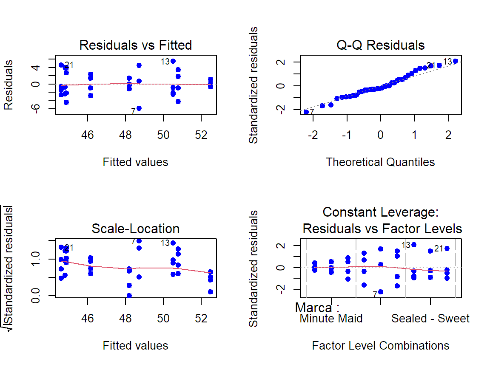
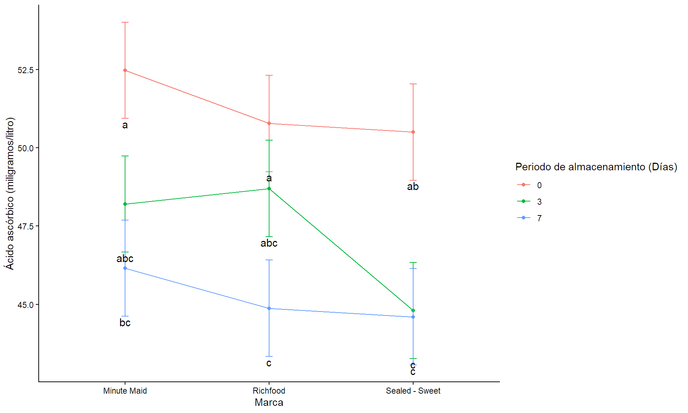

ANOVA con R
Diseño de factorial general
Introducción.
Diseño facforial
El Diseño factorial corresponde a experimentos donde se desea estudiar de forma simultánea los efectos que tienen varios factores sobre una variable de respuesta, de manera que todos los niveles de un factor se combinan con todos los niveles de cualquier otro factor para formar los tratamientos. Este diseño es ampliamente utilizados cuando se sabe poco de los niveles más adecuados de los factores, o ni siquiera cuáles son importantes, y cuando se desea obtener recomendaciones.
Tipos de pruebas estadísticas
ANOVA de dos vía. Se emplea para determinar si existen diferencias significativas entre las medias de los tratamientos de dos factores o más incluida la interación entre estos y requiere el cumplimiento de los supuestos sobre los residuales del modelo.
Actividad práctica.
Contexto de los datos
El Departamento de Nutrición Humana y Alimentos del Virginia Tech realizó un estudio titulado Vitamin C Retention in Reconstituted Frozen Orange Juice sobre la estabilidad de la vitamina C en el concentrado de jugo de naranja congelado reconstituido y almacenado en un refrigerador durante un periodo de hasta una semana. Se probaron 3 tipos de concentrado de jugo de naranja congelado en 3 periodos distintos, los cuales se refieren al número de días transcurridos desde que se mezcló el jugo hasta que se probó. Se registraron los resultados en miligramos de ácido ascórbico por litro de 4 combinaciones de los factores.
Tabla de datos
| Marca | 0 Días | 3 Días | 7 Días. |
|---|---|---|---|
| Richfood | 52.6 54.2 49.8 46.5 |
49.4 49.4 42.8 53.2 |
42.7 48.8 40.4 47.6 |
| Sealed - Sweet | 56 48 49.6 48.4 |
48.8 44 44 42.4 |
49.2 44 42 43.2 |
| Minute Maid | 52.5 52 51.8 53.6 |
48 47 48.2 49.6 |
48.5 43.3 45.2 47.6 |
Librerías.
Recuerde que debe instalar previamente la(s) librería(s) que no ha utilizado antes.
Ingresar y ajustar los datos
Marca<-as.factor(rep(c("Richfood","Sealed - Sweet","Minute Maid"),each=12))
Día<-as.factor(rep(c("0","3","7"),each=4, times=3))
VitC<-c(52.6, 54.2, 49.8,46.5,49.4,49.4,42.8,53.2,42.7,48.8,40.4,47.6,56, 48, 49.6, 48.4, 48.8, 44, 44, 42.4, 49.2, 44, 42, 43.2,
52.5, 52, 51.8, 53.6,48, 47, 48.2, 49.6, 48.5, 43.3, 45.2, 47.6)
Datos<-data.frame(Marca,Día, VitC)Creación del modelo.
La función aov() crea modelos lineales que relacionan una variable dependiente (numérica) con una o más variables independientes (factores o covariables). Tiene como argumentos formula= Una expresión que define la relación entre la variable dependiente y las variables independientes y data= Un data.frame que contiene los datos. En el caso del diseño factorial los factores se separar por el signo (*) para un modelo con interacción.
Verificación de supuestos.
La verificación de los supuestos se hacen sobre los residuales del modelo creado e incluye:
Supuesto de normalidad: Se verifica con el test Shapiro-Wilk, función
shapiro.test()Supuesto de homocedasticidad: Se verifica con el test de Bartlett, función
bartlett.test()de manera separada por cada factor.Supuesto de independencia: Se garantiza aplicando el principio de aleatorización y se puede verificar con el test de durbin Watson, función
dwtest.test()
Supuesto - Normalidad.
Hipótesis estadísticas:
\(H_0:=\) Los residuales se ajusta a la distribución normal.
\(H1:=\) Los residuales no se ajusta a la distribución normal.
Regla de Interpretación. Valores de p mayores o iguales al nivel de significancia respaldan la \(H_o\), mientras que valores de p menores respaldan la \(H_1\).
Shapiro-Wilk normality test
data: modelo$residuals
W = 0.97767, p-value = 0.6664Supuesto - Homocedasticidad.
Verificación de predichos vs residuales, o por combinación. Para el segundo emplaremos la función unite() y guardaremos los datos con una nueva columna correspondiente a la combinación de ambos factores, en un objeto con el nombre de DatosC.
Hipótesis estadísticas: \(H_0:=\) Los residuales se distribuyen con varianza constante. \(H1:=\) Los residuales no se distribuyen con varianza constante.
Regla de Interpretación. Valores de p mayores o iguales al nivel de significancia respaldan la \(H_o\), mientras que valores de p menores respaldan la \(H_1\).
Df Sum Sq Mean Sq F value Pr(>F)
modelo$residuals 1 0.0 0.000 0 1
Residuals 34 277.6 8.165 DatosC<-Datos %>% unite(c(Marca, Día), col = "Marca:Día",
sep = ":",remove = FALSE)
bartlett.test(modelo$residuals~DatosC$`Marca:Día`)
Bartlett test of homogeneity of variances
data: modelo$residuals by DatosC$`Marca:Día`
Bartlett's K-squared = 9.8253, df = 8, p-value = 0.2775Gráficos- Análisis de los residuales.

Supuesto - Independencia.
Hipótesis estadísticas:
\(H_0:=\) No existe autocorrelación de primer orden en los residuales.
\(H1:=\) Existe autocorrelación de primer orden en los residuales.
Regla de Interpretación. Valores de p mayores o iguales al nivel de significancia respaldan la \(H_o\), mientras que valores de p menores respaldan la \(H_1\).
Durbin-Watson test
data: modelo
DW = 2.6768, p-value = 0.4377
alternative hypothesis: true autocorrelation is not 0Tabla del análisis de varianza.
- Si se cumplen todos los supuestos use la función
summary.aov() - Si no cumple la normalidad o la homocedasticidad o ambos, transforme los datos de la variable respuesta.
Tabla del análisis de varianza.
Objetivo: Evaluar el efecto del nivel de riego y fertilización con K sobre el peso del olivo.
Hipótesis estadísticas para los factores:
\(H_0:=\) No hay diferencias en el peso del olivo por nivel de riego. \(H_1:=\) Hay diferencias en el peso del olivo por nivel de riego
\(H_0:=\) No hay diferencias en el peso del olivo por nivel de fertiización con K.. \(H_1:=\) Hay diferencias en el peso del olivo por nivel de fertilización con K.
Hipótesis estadísticas para la interacción:
\(H_0:=\) El peso del olivo con las difrentes combinaciones es el mismo. \(H_1:=\) Entre al menos un par de combinaciones el peso del olivo es diferente.
Regla de Interpretación. Valores de p mayores o iguales al nivel de significancia respaldan la \(H_o\). mientras que valores de p menores respaldan la \(H_1\).
Df Sum Sq Mean Sq F value Pr(>F)
Marca 2 32.84 16.42 1.739 0.194843
Día 2 226.94 113.47 12.017 0.000185 ***
Marca:Día 4 17.82 4.45 0.472 0.756033
Residuals 27 254.95 9.44
---
Signif. codes: 0 '***' 0.001 '**' 0.01 '*' 0.05 '.' 0.1 ' ' 1Prueba de múltiples rangos.
¿Cuándo se aplica? Cuando el análisis de varianza arroja un resultado significativo para alguna de las fuentes de variabilidad.
¿Con qué fin? Indentificar en qué tratamiento(s) la media es diferente.
¿Test a emplear?
LSD.test()contrastes con mínimas diferencias de fisher,HSD.test()contrastes con Tukey-kramer,duncan.test()contrastes con duncan,scheffe.test()contrastes con scheffé, etc.
Prueba de múltiples rangos - LSD factor A.
$statistics
MSerror Df Mean CV t.value LSD
9.442685 27 47.89722 6.415602 2.051831 2.57403
$parameters
test p.ajusted name.t ntr alpha
Fisher-LSD none Marca 3 0.05
$means
VitC std r se LCL UCL Min Max
Minute Maid 48.94167 3.094705 12 0.8870684 47.12155 50.76178 43.3 53.6
Richfood 48.11667 4.364908 12 0.8870684 46.29655 49.93678 40.4 54.2
Sealed - Sweet 46.63333 4.098632 12 0.8870684 44.81322 48.45345 42.0 56.0
Q25 Q50 Q75
Minute Maid 47.450 48.35 51.85
Richfood 45.575 49.10 50.50
Sealed - Sweet 43.800 46.00 48.90
$comparison
NULL
$groups
VitC groups
Minute Maid 48.94167 a
Richfood 48.11667 a
Sealed - Sweet 46.63333 a
attr(,"class")
[1] "group"Prueba de múltiples rangos - LSD factor B.
$statistics
MSerror Df Mean CV t.value LSD
9.442685 27 47.89722 6.415602 2.051831 2.57403
$parameters
test p.ajusted name.t ntr alpha
Fisher-LSD none Día 3 0.05
$means
VitC std r se LCL UCL Min Max Q25 Q50 Q75
0 51.25000 2.814088 12 0.8870684 49.42989 53.07011 46.5 56.0 49.300 51.9 52.850
3 47.23333 3.282830 12 0.8870684 45.41322 49.05345 42.4 53.2 44.000 48.1 49.400
7 45.20833 3.014347 12 0.8870684 43.38822 47.02845 40.4 49.2 43.075 44.6 47.825
$comparison
NULL
$groups
VitC groups
0 51.25000 a
3 47.23333 b
7 45.20833 b
attr(,"class")
[1] "group"Prueba de múltiples rangos -LSD interacción.
Recuerde que para realizar la prueba se debe tener una columna con la combinación de los factores.
$statistics
MSerror Df Mean CV t.value LSD
9.44 27 47.89722 6.41469 2.051831 4.457717
$parameters
test p.ajusted name.t ntr alpha
Fisher-LSD none DatosC$`Marca:Día` 9 0.05
$means
DatosC$VitC std r se LCL UCL Min Max
Minute Maid:0 52.475 0.8057088 4 1.536229 49.32292 55.62708 51.8 53.6
Minute Maid:3 48.200 1.0708252 4 1.536229 45.04792 51.35208 47.0 49.6
Minute Maid:7 46.150 2.3558438 4 1.536229 42.99792 49.30208 43.3 48.5
Richfood:0 50.775 3.3807051 4 1.536229 47.62292 53.92708 46.5 54.2
Richfood:3 48.700 4.3220366 4 1.536229 45.54792 51.85208 42.8 53.2
Richfood:7 44.875 3.9827754 4 1.536229 41.72292 48.02708 40.4 48.8
Sealed - Sweet:0 50.500 3.7291643 4 1.536229 47.34792 53.65208 48.0 56.0
Sealed - Sweet:3 44.800 2.7712813 4 1.536229 41.64792 47.95208 42.4 48.8
Sealed - Sweet:7 44.600 3.1749016 4 1.536229 41.44792 47.75208 42.0 49.2
Q25 Q50 Q75
Minute Maid:0 51.950 52.25 52.775
Minute Maid:3 47.750 48.10 48.550
Minute Maid:7 44.725 46.40 47.825
Richfood:0 48.975 51.20 53.000
Richfood:3 47.750 49.40 50.350
Richfood:7 42.125 45.15 47.900
Sealed - Sweet:0 48.300 49.00 51.200
Sealed - Sweet:3 43.600 44.00 45.200
Sealed - Sweet:7 42.900 43.60 45.300
$comparison
NULL
$groups
DatosC$VitC groups
Minute Maid:0 52.475 a
Richfood:0 50.775 a
Sealed - Sweet:0 50.500 ab
Richfood:3 48.700 abc
Minute Maid:3 48.200 abc
Minute Maid:7 46.150 bc
Richfood:7 44.875 c
Sealed - Sweet:3 44.800 c
Sealed - Sweet:7 44.600 c
attr(,"class")
[1] "group"Alternativas gráficas.
## Gráfico de interación.
tb<-LSDi$means
tb$Combinación<-row.names(tb)
tb1<-LSDi$groups
tb2<-left_join(tb, tb1, by = join_by(`DatosC$VitC`))
tb3<-tb2 %>%
separate(Combinación, into =c("Marca" , "Día"),sep = ":",remove = FALSE)
ggplot(tb3, aes(x = Marca, y = `DatosC$VitC`, color=Día,
group=Día)) +
geom_point() +geom_line()+
geom_errorbar(aes(ymin =`DatosC$VitC` - se,
ymax = `DatosC$VitC`+ se),
width = 0.05) +
geom_text(aes(label = groups), color="black", vjust = 7, size = 4) +
labs(x ="Marca" ,
y = "Ácido ascórbico (miligramos/litro)",
color="Periodo de almacenamiento (Días)")+
scale_y_continuous(limits = c(NA, NA))+
theme_classic()Alternativas gráficas.

Tamaño del efecto.
Tamaño de efecto según cohens
- f de cohes es la magnitud de la diferencia real entre los grupos, dónde los valores comunes son 0.1 (pequeño), 0.25 (mediano) y 0.40 (grande). (Cohen,1988)
# Effect Size for ANOVA (Type I)
Parameter | Cohen's f (partial) | 95% CI
---------------------------------------------
Marca | 0.36 | [0.00, Inf]
Día | 0.94 | [0.53, Inf]
Marca:Día | 0.26 | [0.00, Inf]
- One-sided CIs: upper bound fixed at [Inf].Prueba de potencia.
Balanced one-way analysis of variance power calculation
k = 9
n = 4
f = 0.26
sig.level = 0.05
power = 0.1254572
NOTE: n is number in each group
Balanced one-way analysis of variance power calculation
k = 9
n = 25.56496
f = 0.26
sig.level = 0.05
power = 0.8
NOTE: n is number in each group